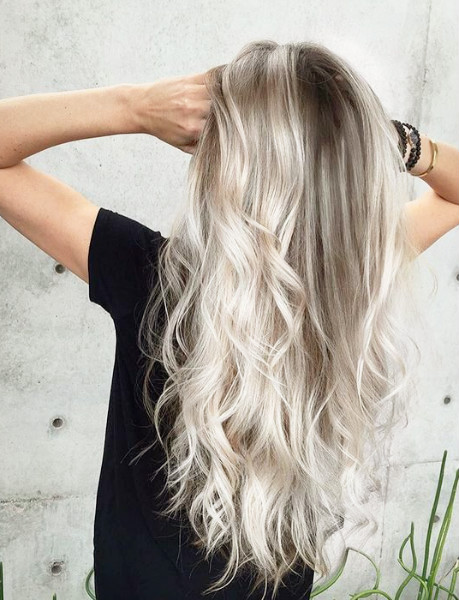
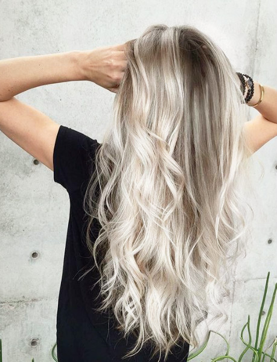

Några fina hårfrisyrer nu i sommar är bl.a två inbakade eller utbakade flätor, messy bun, lockigt och vågigt hår.
En fin hårfärg i sommar är kallt blont och även grått och pastell rosa. Om man kanske vill ha lite längre hår så kan man lägga i lite cocosolja. Annars kan man bara köpa en hårmask.
Ett jätte bra schampo som verkligen ger resultat är från Maria nila!
En håraccesoar som är poppis just nu är bandana! Det är snyggt att ha i olika färger och man kan ha det när man till exempel har en messybun, hästsvans, eller bara utsläppt. Jag själv tycker att både tjejer och killar kan ha det. Men bandana behöver man bara inte det i håret. Enligt mig så tycker jag att det även är supersnyggt att knyta bandanan runt låret om man har shorts!
Om du kanske inte riktigt gillar att ha massa saker i håret är det bara jättefint att ha utsläppt hår!
 
